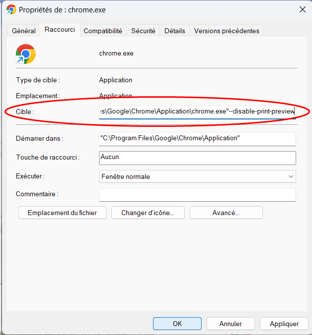

Impression depuis Google Chrome® - Options d'impression non-respectées
Octobre 2026
Contexte
En tant qu'administrateur, je constate que lorsqu'un utilisateur lance une impression depuis le navigateur Google Chrome®, il arrive que les préférences d'impression définies dans MS Windows® ou dans le WES ne soient pas respectées.
Par exemple, la file est configurée pour une impression noir-et blanc, mais l'utilisateur peut quand même imprimer en couleur. De même pour le recto-verso.
Les vérifications suivantes sont effectuées :
-
les préférences d’impression par défaut sont correctement configurées dans le pilote MS Windows ;
-
les préférences d'impression sont configurées sur la file contrôlée par Watchdoc ;
-
lorsque le document est imprimé depuis une autre application MS Windows®, les préférences sont correctement appliquées ;
-
lorsque le document est imprimé depuis Google Chrome®, certaines préférences du pilote peuvent ne pas être respectées.
Cause
Le comportement est lié au mécanisme d’aperçu d’impression utilisé par Chrome®.
Il est important de distinguer le rôle de Watchdoc de celui de MS Windows® et de Google Chrome®. Watchdoc ne définit pas systématiquement les paramètres d’impression par défaut du document.
Lorsque l’impression est effectuée sans client d’impression spécifique (comme WPC for Windows ou for Chrome, par exemple), les paramètres par défaut de l’imprimante sont pris en charge par le spooler MS Windows.
Dans le cas présent, Google Chrome peut utiliser son propre mécanisme d’aperçu et de préparation de l’impression. Les paramètres sélectionnés dans cet environnement peuvent prendre le dessus sur les préférences configurées au niveau du pilote d’imprimante MS Windows.
Ainsi, même si la file d’impression ou le pilote est configuré pour utiliser le noir et blanc par défaut, Chrome peut transmettre le travail avec ses propres paramètres. Le problème n’est donc pas nécessairement lié à Watchdoc : il s’agit d’un conflit de priorité entre les paramètres d’impression de Chrome et ceux définis dans MS Windows.
Résolution
Deux méthodes sont proposées :
-
la première permet une configuration locale sur un poste en particulier ;
-
la seconde est recommandée dans un environnement d’entreprise lorsque la configuration doit être déployée de manière centralisée sur un grand nombre de postes.
Désactiver l’aperçu d’impression Chrome® sur un poste particulier
Cette méthode consiste à modifier le raccourci utilisé pour lancer Google Chrome® afin de désactiver son aperçu d’impression.
Poste MS Windows®
-
Fermez complètement Google Chrome®.
-
Ouvrez le Gestionnaire des tâches MS Windows® et vérifiez qu’aucun processus Google Chrome® ne reste actif. Si nécessaire, utilisez "Fin de tâche" sur les processus Chrome®.
-
Sur le Bureau ou dans la barre des tâches, cliquez-droit sur l’icône de raccourci Google Chrome®.
-
Ouvrez les propriétés du raccourci.
-
Dans le champ "Cible", placez le curseur à la fin de la commande existante.
-
Ajoutez un espace puis le paramètre suivant : --disable-print-preview :

-
Validez avec "OK".
-
Relancez Google Chrome®, puis effectuez un test d’impression.

Poste Mac :
-
Quittez Google Chrome®.
-
Lancez le terminal sur votre Mac®.
-
Exécuter les paramètres par défaut write com.google.Chrome DisablePrintPreview -bool true.
-
Fermez le terminal et ouvrez Google Chrome®.
-
Effectuez un test d'impression.
Désactiver l’aperçu d’impression Chrome® en masse par stratégie de groupe
Dans un environnement d’entreprise, privilégiez cette méthode lorsque le paramétrage doit être appliqué à plusieurs postes. La configuration est réalisée à l’aide des modèles de stratégie de groupe (GPO) de Google Chrome®.
-
Téléchargez le modèle de Politique de Groupe pour Chrome®.
-
Décompressez le contenu du contrôleur de domaine.
-
Ouvrez le dossier Configuration.
-
Ouvrez le dossier admx.
-
Copiez le fichier Chrome.admx et le dossier linguistique approprié (EN-US) dans le dossier où vous gardez vos paramètres de politique (par défaut : c :\Windows\PolicyDefinitions)
-
Ouvrez Gestion de la politique de groupe.
-
Sélectionnez la politique que vous souhaitez utiliser pour appliquer la configuration Chrome ou créez-en une nouvelle
-
Rendez-vous sur : Configuration informatique > politiques > modèles administratifs > Google Chrome Impression.
-
Double-cliquez sur Désactiver l’aperçu d’impression.
-
Réglez la politique sur Activé.
-
Cliquez sur OK.
Vérifications
Après modification du raccourci ou de la politique de groupe, effectuez les vérifications suivantes.
-
Vérifiez que Chrome est complètement fermé puis relancez-le.
-
Vérifiez la configuration par défaut de la file d’impression et du pilote MS Windows.
-
Ouvrez un document dans Chrome et lancez son impression (CTRL+P).
-
Vérifiez que le travail est envoyé avec les paramètres attendus, notamment Noir et blanc si cette option est définie par défaut.
-
Comparez, si nécessaire, le résultat avec une impression lancée depuis une autre application Windows.